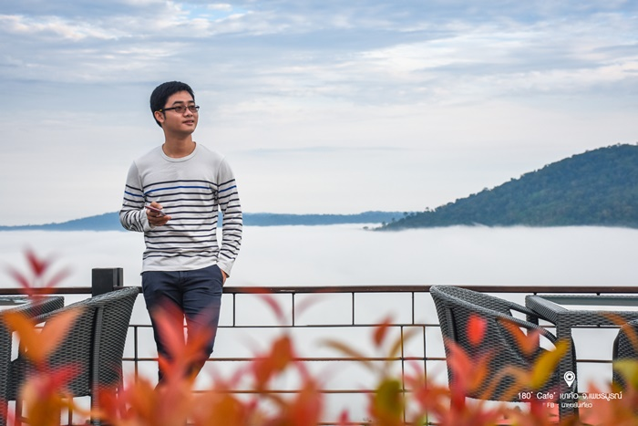

--- ร้านกาแฟ 180 องศา ---
จุดเช็คอินชมทะเลหมอกแห่งใหม่ของเขาค้อ
แน่นอนว่าหากพูดถึงเขาค้อสถานที่ท่องเที่ยวชื่อดังของจังหวัดเพชรบูรณ์ หลายๆ คนคงจะคิดถึงทะเลหมอกหนาๆ สุดอลังการที่ลอยอยู่เหนือเขาค้อตลอดทั้งปี ที่นี่ถือเป็นที่ชมทะเลหมอกที่มีชื่อเสียงมากที่สุดแห่งหนึ่งในประเทศไทยเลยก็ว่าได้ ซึ่งแต่ละคนเวลาไปเขาค้อก็จะมีจุดชมทะเลหมอกที่แตกต่างกันไป วันนี้ Sanook! Travel จะพาทุกคนไปทำความรู้จักกับร้านกาแฟแห่งหนึ่งที่ยังไม่ค่อยมีคนรู้จักมากนัก แต่ที่นี่คือจุดชมทะเลหมอกที่สวยงามที่สุดแห่งหนึ่งบนเขาค้อเลยทีเดียว
ร้านกาแฟ 180 องศาเป็นทั้งคาเฟ่และที่พักที่ตั้งอยู่บนภูเขาสูง วิวด้านหน้าคือภาพพาโนราม่าของขุนเขาที่สลับซับซ้อนกันอย่างงดงาม และที่พีคที่สุดก็คือทะเลหมอกสุดอลังการในยามเช้าที่แทบจะสะกดทุกสายตาของผู้ที่ได้มาเยือนให้ได้หยุดชื่นชมความมหัศจรรย์ของธรรมชาตินี้ และยิ่งสวยงามมากขึ้นไปอีกเมื่อแสงแดดอ่อนๆ ในยามเช้าค่อยๆ โผล่พ้นเมฆหมอกลงมา เป็นช่วงเวลาในฝันที่หลายคนอยากจะไปสัมผัสสักครั้งในชีวิต

วิวธรรมชาติแบบ 180 องศาตามชื่อของร้านกาแฟแห่งนี้ เป็นวิวที่สวยงามสมชื่อจริงๆ นอกจากนี้รอบๆ บริเวณร้านกาแฟยังมีการจัดตกแต่งสวนดอกไม้ไว้อย่างสวยงาม
เป็นมุมถ่ายภาพที่จะทำให้คุณได้ภาพสวยๆ กลับไปเป็นความทรงจำดีๆ แน่นอน ใครที่มาทานกาแฟที่ร้านนี้แล้วยังไม่เต็มอิ่มกับการซึมซับธรรมชาติก็สามารถนอนพักค้างคืนที่นี่ได้ด้วย ซึ่งแน่นอนว่าขนาดร้านกาแฟยังวิวสวยขนาดนี้ แล้วที่พักจะขนาดไหน ที่พักแบบบังกะโลหันหน้าออกสู่ขุนเขา ในทุกเช้าจะมีทะเลหมอกหนาๆ มาเคาะประตูปลุกคุณถึงบนเตียงนอนเลยทีเดียว ถือได้ว่าเป็นสถานที่ท่องเที่ยวลับแห่งเขาค้อที่รอให้ทุกคนไปสัมผัสความมหัศจรรย์ชมวิวทะเลหมอกสุดอลังการกันครับ

ที่ตั้งร้านกาแฟ 180 องศา : ตำบลเขาค้อ (320.13 km) อำเภอเขาค้อ จังหวัดเพชรบูรณ์
เบอร์ติดต่อ : 096 665 2954
เวลาเปิด - ปิด : 10:00 - 16:30 น.
ข้อมูลเพิ่มเติม : 180alldayallseason